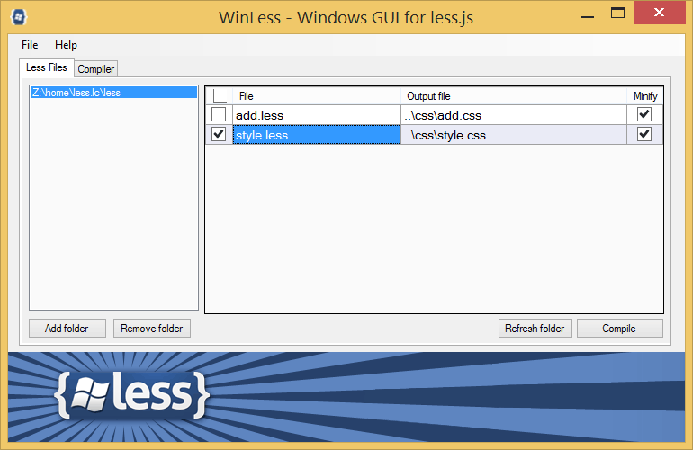
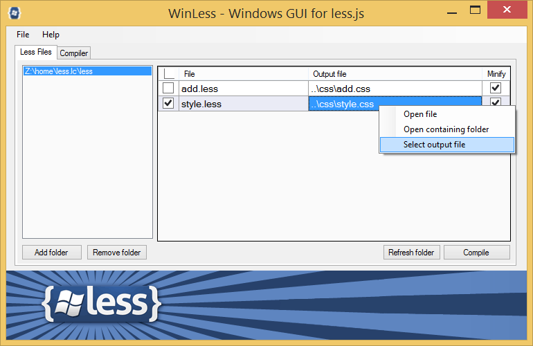
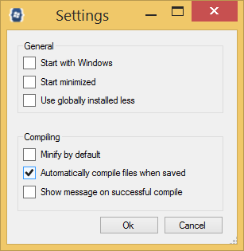

Программа WinLess
WinLess — один из самых простых и популярных компиляторов Less под Windows, к тому же совершенно бесплатный для использования.
Скачайте программу по этому адресу и запустите её после установки.
http://winless.org/online-less-compiler
Компиляция
Для начала добавьте в программу папку с Less-файлами.
Для этого перетащите папку напрямую в окно "Less files" или выберите папку через кнопку "Add folder".
По умолчанию готовые файлы сохраняются в папку с именем CSS.
Если такой папки ещё не существует, то она будет создана и в неё добавлены новые стилевые файлы.
Код можно сделать компактным, поставив галочку в пункте Minify, при этом все комментарии удаляются, а сам код записывается в одну строку.
В итоге работать с конечным документом становится проблематично, зато уменьшается итоговый размер файлов.
Сама компиляция происходит двумя путями.
1. Добавляете папку с Less-файлами, отмечаете галочками те из них, которые следует преобразовать в CSS, указываете, минимизировать их или нет, после чего нажимаете кнопку Compile.
При первой компиляции создаётся новая папка CSS и в неё сохраняются готовые файлы.
В дальнейшем происходит только обновление их содержимого.
Выходную папку при желании можно поменять, щёлкнув правой кнопкой мыши по файлу и выбрав в списке пункт "Select output file".
2. После запуска программы компиляция происходит в автоматически фоновом режиме при сохранении Less-файлов.
Это полезно при написании нового кода и работе над ним.
Какие файлы компилировать и куда их сохранять определяется настройками WinLess.
При возникновении ошибок программа выведет сообщение об их наличии.
Настройки программы
Для вывода окна настроек выберите в меню пункт File > Settings.
Start with Windows — запускать программу вместе с Windows.
Опцию имеет смысл включить при активной работе с Less-файлами, когда их надо компилировать много и часто.
Start minimized — при запуске программа незаметно висит в трее Windows и тихо делает своё дело.
Use globally installed less — вместо компилятора в WinLess применяется компилятор, установленный через Node.js.
Если такого нет, то будет показана ошибка.
Minify by default — по умолчанию все компилированные CSS-файлы оказываются компактными — из них удаляются пробелы, комментарии, табуляция и переносы строк.
Automatically compile files when saved — WinLess отслеживает добавленные в программу Less-документы и при их изменении в стороннем редакторе компилирует автоматически.
Show message on successful compile — после успешной компиляции появляется успешное сообщение об этом.